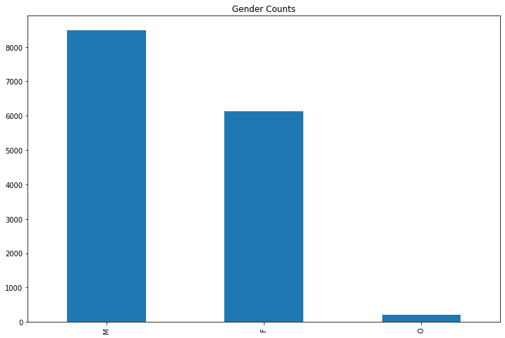
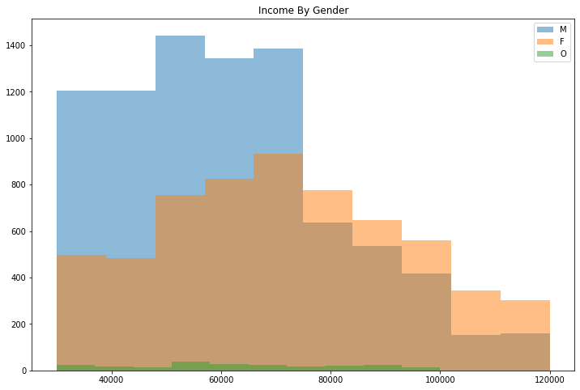
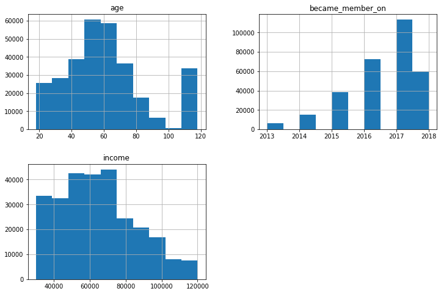
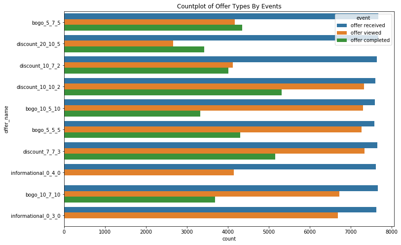
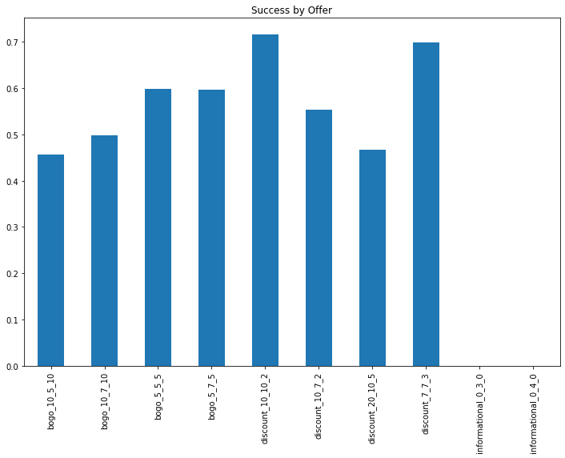
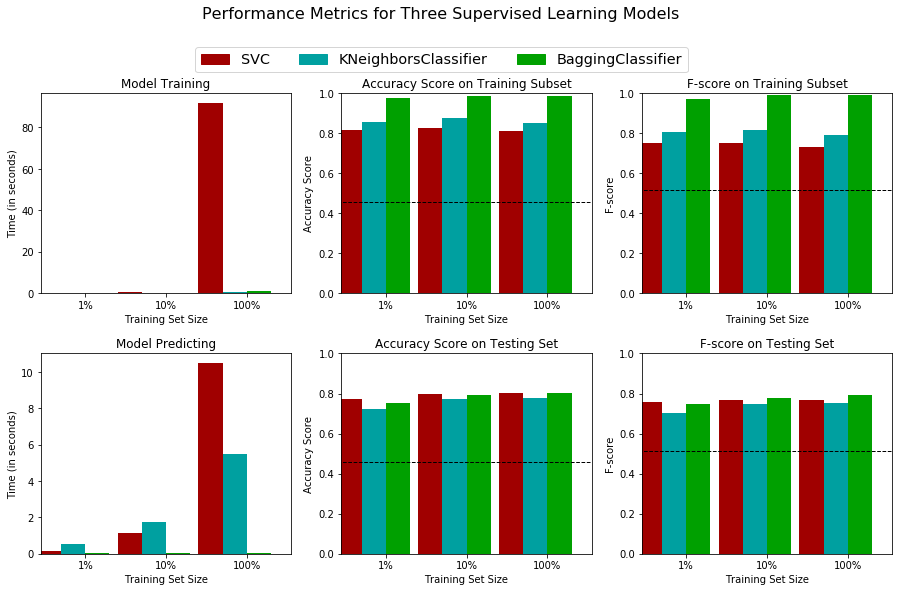
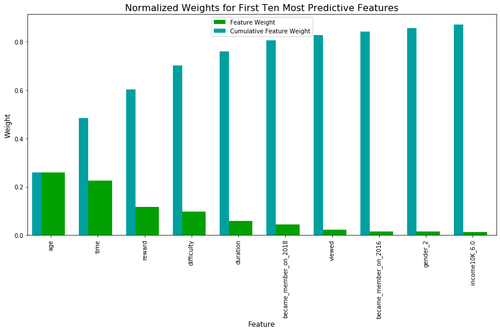

Starbucks Capstone
Starbucks: successful mobile offers and their characteristics
(Or Introduction)
For the Starbucks Capstone project we are provided a set of "data that mimics customer behavior on the Starbucks rewards mobile app." This data set includes information about people, transactions, offers and events related to those events. Some of the offers in the data are discounts, some are informational and some are buy one get one (bogo) offers. The task provided was to cleanse and combine the data set into some useful form and then determine some information about this data.
Project Overview and Problem statement:
(i.e.) What question are we asking?
I will focus on two specific questions. What types of offers are most successful and will drive more business and what features or characteristics will drive successful offers?
So a two fold question:
- Which offers are the most successful
- Which features lead to successful offers?
Why are these questions important? The first will allow Starbucks to target the types of offers that are most likely to be successful and generate revenue based on that. The second question will allow us to target those offers to those most likely to participate and again, generate revenue.
Methodology/Strategy
My plan is to first cleanse the data and merge it. As I'm not certain what each data set will look like when merged, this may be an iterative process. Then I will review the data and see if I can find which offers tend to be successful and if there are characterizations of those offers in the demographic data. I will use visualizations when possible to help illustrate the data.
Exploratory Data Analysis and Cleansing with Visualizations
I first began by looking at the profile data, data about the people. There were more men than women.

The women, generally, were more evenly distributed over teh income levels, though, with men tending to be right skewed.

I generated histograms of the age, membership year and income to see how they looked.

I noticed a significant outlier on the age (at age 118, this is noted as the age number used when a customer didn't enter an age). Most members were skewed to the left (newer memberships) and income was left skewed, with peaks in the 50 to 70 thousand per year range
I then began working on the merging the data. I was able to create a data set that allowed me to look at the look at the data a bit more holistically. I reviewed the types of events and how many offers of each type were sent out. I viewed information about the transactions (mean amount of $13.68, for example). I found I wanted to know more about the offers and the events associated. How many offers were recieved, viewed and then completed?

I knew, in determining successful offers, I didn't really need the transaction data at this point, and I also knew I needed to "flatten" my data (combine the recieved, viewed and complete values into a person by offer grouping). I needed to ensure that an offer was really acted on, rather than coincidentally being compelted. That meant ensuring that each offer completed was actually recieved and viewed and then completed within the timeframe alotted. I created a function to do that. From there I could see which offers truly were "successful".

I found two offers really stood out the discount_10_10_2 and discount 7_7_3. These were followed by bogo_5_5_5 and bogo 5_7_5. These discount offers
were the lower difficulty offers (7 or 10, vs. 20) and if there were similar difficulties and reward (10 vs. 10) the longer duration won out.
same seems to hold true for the bogo (buy one get one) offers.
I reviewed the demographic data of these successful offers, but found the data looked very similar to our source material. The gender, membership year
and income histograms seemed very simliar. There had to be a better way to get at the characterstics that determined these successful offers. And of course,
there is, classifying models. Some final feature engineering and data preprocessing was conducted. First we dropped unnecessary columns: person, person_id, offer_id, and offer_name.
Then I broke the data into our offer (our target set) and feature sets. Next, we converted several numerical values (income, became_member_on) to categorical
values using pandas getdummies functionality. This would allow us to include them in our classifier engine later more easily. I also removed null values
(since our classifier engines can't use them). I then used a MinMaxScaler to scale numeric variables we didn't want to turn into categories (time, difficulty,
duration, age and reward) The first step was to get information about a basic Naive predictor and calculate the Accuracy and F1 Score for comparison to models I build later.
Why use Accuracy and F1 Score? Accuracy, of course is good since it high accuracy means it is easy to pinpoint predictions that will be successful.
Since we're note overly concerned about false positives and false negatives, this will be a good measure. Additionally, I will also use the F1 score
since it will provide more information about recall and precision. F1 is a weighted average of the precision and recall so if one or the other gets
out of balance this helps keep our predictions on track. I will compare those scores with three more classifiers to get a good solid base to work from. The data we have is categorical. Using the following link (https://scikit-learn.org/stable/tutorial/machine_learning_map/index.html) I reviewed which
model might make the most sense. I decided on the following three: Support Vector Machine, K-Nearest Neighbor and the Bagging Classifier method. I investigated
and experimented with ADA Boost, Decision Trees and Random Forest Classifiers as well. We'll train on three different amounts of the data (1%, 10% and all) we'll
compare accuracy and f-scores to see which models seem the best for us. Hyperparameter settings were left at their defaults. For the SVC Classifier we used the default
setting of degree 3 and random_state of 0 for reproducible output. For KNeighbors we stuck with 5 nieghbors, auto select on the algorithm, leaf size of 30
random_state of 0, again for reproducibility, and uniform weights. For the Bagging Classifier this included 10 base estimators, random_state of 0 to ensure
each run was the same. I modeled a few different classifiers starting with a Naive Predictor. The Accuracy was about 45% and F1 Score 0.51 (middle of the road, not very good). I then
tested the models discussed above to find the a good solid model that would predict at a high level. The SVC model had an Accuracy in the testing set between 77%
and 80% and an F1 Score range from 0.75 to 0.76. Pretty solid, much better than the Naive predictor. The KNeighbors ranged from 72% to 77%, not as good with
F1 Scores from .70 to .75. Finally the Bagging Classifier ranged from 75% to 80% with F1 Scores from .74 to .79. The Bagging Classifier was marginally better
than the SVC, but the final determinant was the speed. The Bagging Classifier was much, much faster taking significantly less time to deliver results than the
SVC with all the data used in the Training and Testing sets. Hyperparameters were left at defaults since these worked well enough to reach satisfactory results.
With the Bagging Classifier I did explore changing the n_estimators to 5 and 20 with limited effect. Then looking at max_features of 5 and 15 and those produced
both less accruate and lower f1 score results. I tried bootstrapping the features set to True, this did slightly improve the accuracy and f1 score. So future
investigations might explore that. With an identified model, I then used that to determine the features that would be most important using feature_importances_. This resulted in age, time, reward,
difficulty and duration. Which leads me to conclude that the type of offer, combined with its rewards are major factors in whether it will be successful. Additionally
the age of the respondent as well as what appears to be newer members (2018 and 2016) figured significantly in our top ten predictive features. I started out with two main questions "What types of offers are most successful and will drive more business and what features will drive successful offers?" To get
a better understanding of that we reviewed the data, manipulated and visualized it in a few different ways. We combined it and formatted it then created a solid
feature set. We were able to view that data and determine a few different offers that tended to be successful (discount_10_10_2, discount 7_7_3 and bogo_5_5_5 and
bogo 5_7_5). We created some visualizations of the demographics for those offers, but it wasn't very helpful. So we created and compared some classifying models. We found the Bagging Classifier provided the fastest, yet also accurate and precise results. With that model we were
able to determine our predictive or determinant features (age, time, reward, difficulty, duration) and some additional (like newer membership and income level of 60k). This isn't the end, though. We could improve the models by gathering more data and rerunning. We could use the SVC with a more powerful system (potenially pushing it off
to a high end graphics engine to improve performance). We could delve into changing the various hyperparameters of our models to increase our accuracy and f1 score. We could
look at our modeling from a different perspective and create a recommendation engine.Data Preprocessing
Metrics: Next Steps, modeling and determinant features
Model Evaluation and Validation: Models to Try
Refinement and Justification: Model Results


Conclusion
Enjoy that Discounted Cuppa Joe/Discounts are successful
Focus on the offer characteristics, but also consider age of the target audience and newer members
Improvements